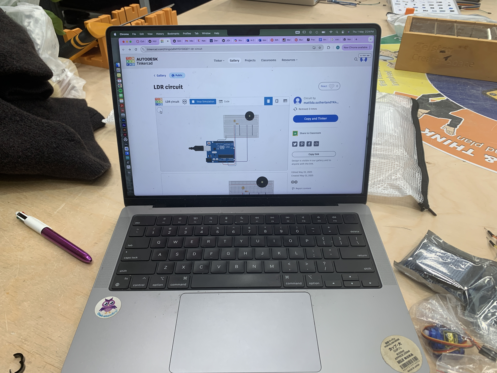
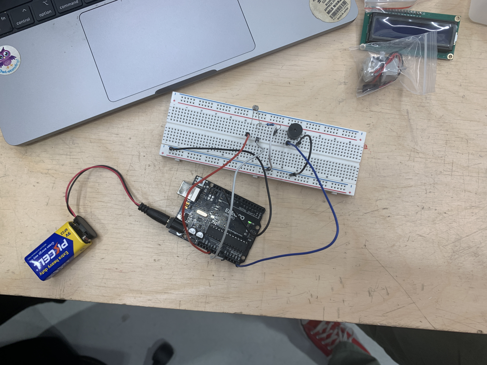

this week we created a simple theremin, using a photoresistor and a buzzer.
this made an annoying buzzing noise that changed pitch based on light intensity. therefore, by waving your hand above the sensor you can control the buzzing.
~


i found this to be a fun and simple project. it was quite amusing with the whole class creating this at the same time, with many different buzzers activating at different times.
//chindogu cont.
~
i 3d printed a base and arm segments that had spaces for servos to be attached. i wired it up and used a joystick to control the arm.
the arm was a bit jittery, due to lack of sufficient power, which also caused one of the servos to activate regardless of my input. despite these quirks, i was able to use it to pick up almonds and drop them in my mouth. the robot was also capable of terminating itself, by grabbing at the wires on the breadboard,, it would unplug its own power and turn off.